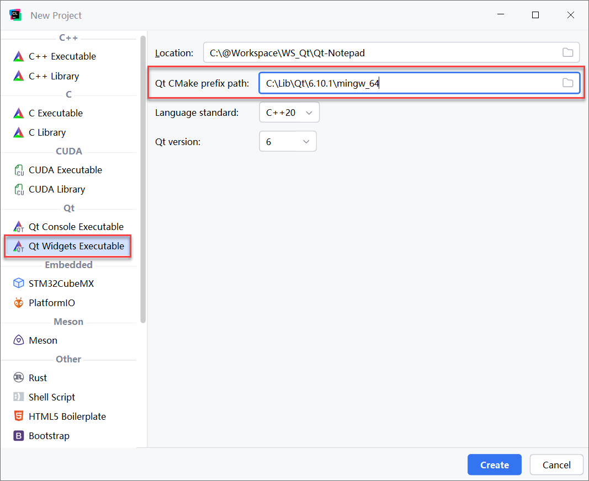

从零到一使用 Clion 构建 Qt 项目

继上一篇 《从零到一构建 C++ 项目（IDE / 命令行双轨实现）》 ，我们继续研究 Qt 项目的构建。如果我们使用 Qt Creator 创建 Qt 项目，在构建 Qt 程序时通常是很丝滑的。如果我们想换成 Clion 来编写 Qt 应用，那么就需要做一些额外的工作，本文将介绍一下具体操作。
1. 简单做法
其实 Clion 对 Qt 是有不错的支持的，在新键项目的类型上就有专门面向 Qt 的项目类型，比如最典型的：Qt Widgets Executable，选则新建这种项目时，必须指定一个重要参数： Qt CMake prefix path ，就是 Qt SDK 的根目录（包含bin、include、lib这类典型文件夹的目录），原因很简单：因为 Qt 太重了，Clion 没有集成它，所以需要通过配置告诉它 Qt 的位置。实际上，这里配置的这个路径是配置给 cmake 命令行的 -DCMAKE_PREFIX_PATH 参数用的（参考： https://doc.qt.io/qt-6/cmake-build-on-cmdline.html ）：

只添加这一项配置，如果幸运的话，你的 Qt 项目就可以在 Clion 构建运行了，可以说是很丝滑的。如果不幸运的话，你可能会遇到两个问题：
试读结束

从零到一使用 Clion 构建 Qt 项目